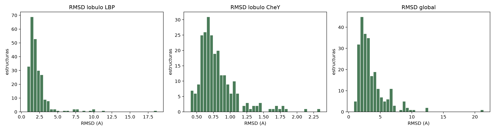
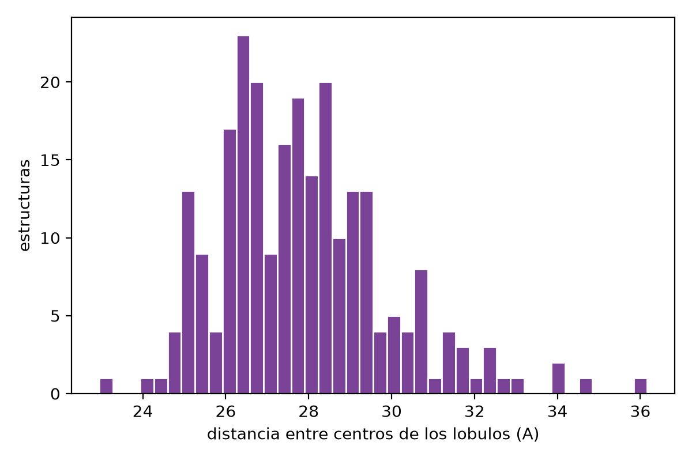
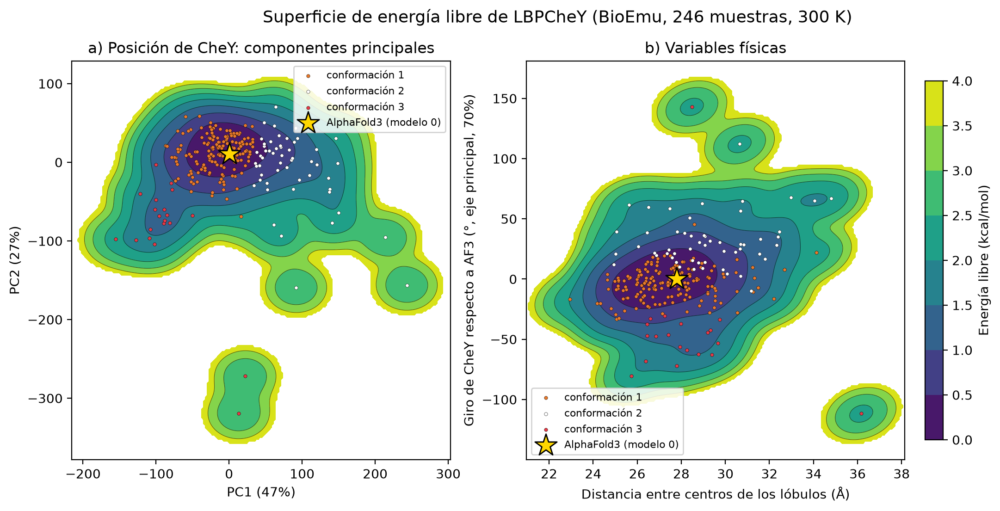
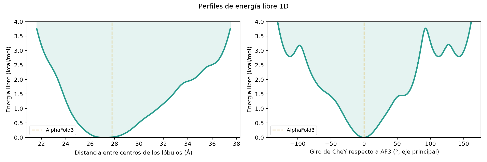
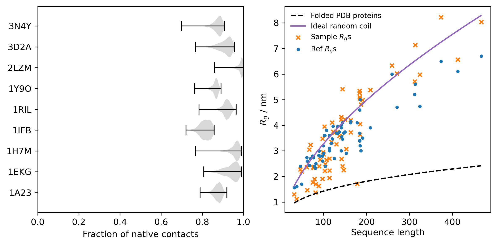
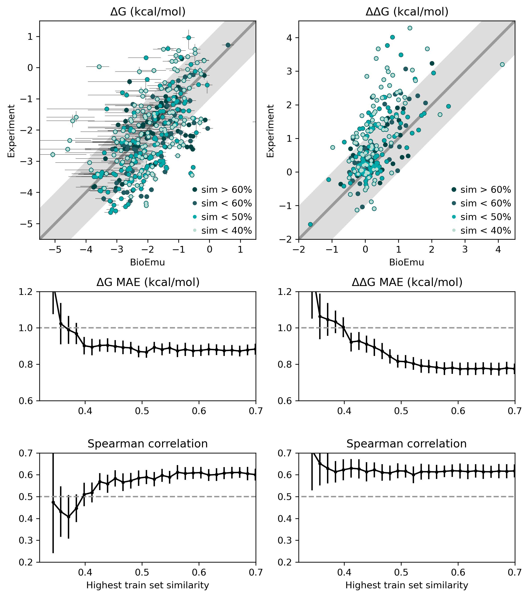

Emulación escalable de ensambles de equilibrio de proteínas
mediante aprendizaje profundo generativo
Las proteínas viven en movimiento
Una estructura experimental es una fotografía, no la distribución completa
¿Qué ignora una sola estructura?
- Movimientos de dominio (abierto ↔ cerrado)
- Cavidades crípticas de unión a ligandos
- Regiones intrínsecamente desordenadas
- Poblaciones de estados menoritarios
La pregunta científica
En la quimera LBPCheY: CheY y LBP se pliegan bien por separado, pero ¿se mueven los lóbulos uno respecto al otro?
LBPCheY — 339 residuos
Quimera diseñada: dominio sensor (LBP) + regulador de respuesta (CheY)
¿Por qué no basta la Dinámica Molecular?
Lo que MD hace bien
- Trayectorias temporales realistas
- Mecanismos de transición
- Fuerzas atómicas explícitas
El problema de muestreo
- Proteínas quedan atrapadas en mínimos de energía
- Transiciones lentas: ms–µs de simulación
- Cada nanosegundo cuesta cómputo intensivo
BioEmu aprende la distribución y genera muestras independientes — sin necesidad de simular la trayectoria entre estados.
BioEmu en una diapositiva
Evoformer
Encoder de AlphaFold2: representaciones single (por residuo) y pair (entre pares). Captura contexto evolutivo y estructural.
Score model
Guía la eliminación de ruido iterativamente (30–50 pasos). Condicionado por las representaciones del Evoformer.
Muestras ~ equilibrio
Frecuencia de muestreo ≈ poblaciones de equilibrio. Miles de estructuras/hora en 1 GPU.
Aplicando BioEmu a LBPCheY
La proteína: LBPCheY (339 aa)
Quimera donde el dominio regulador de respuesta CheY está insertado dentro de la proteína de unión a leucina LBP. Ambos dominios se pliegan bien por separado. La pregunta: ¿hay movimiento relativo entre lóbulos?
Pipeline utilizado
¿Cuánto se mueve cada lóbulo?
| Medida | Media ± SD | Rango |
|---|---|---|
| RMSD CheY | 0.81 ± 0.30 Å | 0.40–2.35 |
| RMSD LBP | 2.30 ± 1.87 Å | 0.76–18.7 |
| RMSD global | 3.56 ± 2.32 Å | 0.79–21.4 |
| Dist. centros | 27.9 ± 2.0 Å | 23.0–36.2 |
CheY permanece rígido (~0.8 Å) — su fold es muy estable. LBP tiene mayor variabilidad (hasta 18.7 Å) con algunas muestras muy alejadas del modelo AF3. La diferencia RMSD global > RMSD lóbulo confirma movimiento relativo entre dominios.

Los lóbulos se separan hasta 13 Å

Lo que vemos
La distancia entre centros de los lóbulos varía entre 23 y 36.2 Å — una diferencia de ~13 Å. La distribución es unimodal y ancha, indicando movimiento continuo (no dos estados discretos).
Interpretación
La quimera exhibe flexibilidad conformacional significativa en su arquitectura de dominio, coherente con la naturaleza de proteínas de unión a sustratos tipo LBP que operan mediante movimientos de lóbulos.
¿Por qué importa?
Sin BioEmu, esto requeriría microsegundos de MD. Aquí se obtiene en horas en 1 GPU, mostrando directamente el valor práctico del método.
Superficie de energía libre de LBPCheY

AF3 (⭐) cae en el mínimo de energía libre — coherente con que predice la conformación más estable.
Hay estados accesorios en la superficie (islas verdes en esquinas) — conformaciones minoritarias accesibles térmicamente a 300 K.
Perfiles 1D: distancia y giro de CheY
Lectura de los perfiles
- Mínimo izquierdo: distancia ~27.5 Å — estado más poblado
- La curva sube gradualmente al alejarse — sin barrera abrupta
- Giro CheY: el mínimo está en 0° (modelo AF3), con estados alternos a ±100°
- ΔG de desplegamiento > 3.3 kcal/mol — ambos dominios estables
Cota de estabilidad
Las 246/246 muestras están plegadas (fracción de contactos nativos ≥0.65). BioEmu confirma que la quimera mantiene ambos folds en equilibrio.

¿Qué tan bien predice BioEmu?
Benchmarks del artículo en proteínas con estados conocidos experimentalmente
adenilato quinasa, receptores — RMSD ≤3 Å
estados desplegados conocidos
estado holo (con ligando)
estado apo — sesgo del PDB hacia estados holo

¿Reproduce los paisajes de energía libre?
Contexto clave: el error experimental típico en mediciones calorimétricas de ΔG es ~1 kcal/mol. Un MAE de 0.74 kcal/mol significa que BioEmu está dentro del ruido experimental.
17 dominios CATH: MAE ~0.9 kcal/mol · Complexina II (IDP): reproduce contenido helicoidal y Rg · CD9 (tetraspanina): reproduce transición abierto/cerrado

Predicción de estabilidad y efecto mutacional
PPFT: innovación técnica
Property-Prediction Fine-Tuning: entrena el modelo de difusión con valores de expectativa experimentales (estabilidades), sin necesitar estructuras medidas de cada mutante. Entrenado en 502,442 mutantes de MEGAscale.
Interpretabilidad: a diferencia de predictores de "caja negra", BioEmu genera el ensemble que explica por qué una mutación desestabiliza — se puede visualizar el cambio estructural.

Límites honestos del método
Lo que BioEmu NO hace
Lo que BioEmu SÍ aporta
¿Qué aprendimos?
Del paper (Lewis et al.)
- BioEmu genera ensambles de equilibrio con MAE ~0.74–0.9 kcal/mol
- 10⁴–10⁵× más rápido que MD en muestreo de estados
- PPFT calibra estabilidades sin estructuras experimentales
- Interpreta efecto de mutaciones estructuralmente
De nuestro experimento (LBPCheY)
- CheY es rígido (RMSD ~0.8 Å); LBP más flexible (hasta 18.7 Å)
- Movimiento relativo entre lóbulos: rango de ~13 Å
- Ambos dominios estables (ΔG desplegamiento >3.3 kcal/mol)
- 3 conformaciones accesibles en el paisaje de energía libre
Modelar LBPCheY con ligando (leucina) · Comparar con MD explícita · Usar BioEmu para screening de mutantes estabilizadores · Extender a proteínas de señalización homólogas.